2.3 Estimation of Moments of Stationary Processes
In this section, we discuss how moments and related quantities of stationary process can be estimated. Informally speaking, the use of “averages” is meaningful for such processes suggesting that classical moments estimators can be employed. Indeed, suppose that one is interested in estimating \(\alpha \equiv \mathbb{E}[m (X_t)]\), where \(m(\cdot)\) is a known function of \(X_t\). If \((X_t)\) is a strongly stationary process, we have
\[\alpha = \int m(x) \, f(x) dx\]
where \(f(x)\) denotes the density of \((X_t), \; \forall t\). Replacing \(f(x)\) by \(f_n(x)\), the empirical density, we obtain the following estimator
\[\hat{\alpha} = \frac{1}{n} \sum_{i = 1}^n m\left(x_i\right).\]
In the next subsection, we examine how this simple idea can be used to estimate the mean, autocovariance and autocorrelation functions. Moreover, we discuss some of the properties of these estimators.
2.3.1 Estimation of the Mean Function
If a time series is stationary, the mean function is constant and a possible estimator of this quantity is, as discussed above, given by
\[\bar{X} = {\frac{1}{n}\sum\limits_{t = 1}^n {{X_t}} }.\]
Naturally, the \(k\)-th moment, say \(\beta_k \equiv \mathbb{E}[X_t^k]\) can be estimated by
\[\hat{\beta}_k = {\frac{1}{n}\sum\limits_{t = 1}^n {{X_t^k}} }, \;\; k \in \left\{x \in \mathbb{N} : \, 0 < x < \infty \right\}.\]
The variance of such estimator can be derived as follows:
\begin{equation} \begin{aligned} \var \left( \hat{\beta}_k \right) &= \var \left( {\frac{1}{n}\sum\limits_{t = 1}^n {{X_t^k}} } \right) \\ &= \frac{1}{{{n^2}}}\var \left( {{{\left[ {\begin{array}{*{20}{c}} 1& \cdots &1 \end{array}} \right]}_{1 \times n}}{{\left[ {\begin{array}{*{20}{c}} {{X_1^k}} \\ \vdots \\ {{X_n^k}} \end{array}} \right]}_{n \times 1}}} \right) \\ &= \frac{1}{{{n^2}}}{\left[ {\begin{array}{*{20}{c}} 1& \cdots &1 \end{array}} \right]_{1 \times n}} \, \boldsymbol{\Sigma}(k) \, {\left[ {\begin{array}{*{20}{c}} 1 \\ \vdots \\ 1 \end{array}} \right]_{n \times 1}}, \end{aligned} (\#eq:chap2VarMoment) \end{equation}where \(\boldsymbol{\Sigma}(k) \in \real^{n \times n}\) and its \(i\)th, \(j\)-th element is given by
\[ \left(\boldsymbol{\Sigma}(k)\right)_{i,j} = \cov \left(X_i^k, X_j^k\right).\]
In the case \(k = 1\), ((??)) can easily be further simplified. Indeed, we have
\[\begin{aligned} \var \left( {\bar X} \right) &= \var \left( {\frac{1}{n}\sum\limits_{t = 1}^n {{X_t}} } \right) \\ &= \frac{1}{{{n^2}}}{\left[ {\begin{array}{*{20}{c}} 1& \cdots &1 \end{array}} \right]_{1 \times n}}\left[ {\begin{array}{*{20}{c}} {\gamma \left( 0 \right)}&{\gamma \left( 1 \right)}& \cdots &{\gamma \left( {n - 1} \right)} \\ {\gamma \left( 1 \right)}&{\gamma \left( 0 \right)}&{}& \vdots \\ \vdots &{}& \ddots & \vdots \\ {\gamma \left( {n - 1} \right)}& \cdots & \cdots &{\gamma \left( 0 \right)} \end{array}} \right]_{n \times n}{\left[ {\begin{array}{*{20}{c}} 1 \\ \vdots \\ 1 \end{array}} \right]_{n \times 1}} \\ &= \frac{1}{{{n^2}}}\left( {n\gamma \left( 0 \right) + 2\left( {n - 1} \right)\gamma \left( 1 \right) + 2\left( {n - 2} \right)\gamma \left( 2 \right) + \cdots + 2\gamma \left( {n - 1} \right)} \right) \\ &= \frac{1}{n}\sum\limits_{h = - n}^n {\left( {1 - \frac{{\left| h \right|}}{n}} \right)\gamma \left( h \right)} . \\ \end{aligned} \]
Obviously, when the \((X_t)\) is a white noise, the above formula reduces to the usual \(\var \left( {\bar X} \right) = \sigma^2_w/n\). In the following example, we consider the case of an AR(1) process and discussed how \(\var \left( {\bar X} \right)\) can be obtained or estimated.
Example 2.7 For an AR(1) we have \(\gamma(h) = \phi^h \sigma_w^2 \left(1 - \phi^2\right)^{-1}\), therefore, we obtain (after some computations):
\begin{equation} \var \left( {\bar X} \right) = \frac{\sigma_w^2 \left( n - 2\phi - n \phi^2 + 2 \phi^{n + 1}\right)}{n^2\left(1-\phi^2\right)\left(1-\phi\right)^2}. \end{equation}Unfortunately, deriving such an exact formula is often difficult when considering more complex models. However, asymptotic approximations are often employed to simplify the calculation. For example, in our case we have
\[\mathop {\lim }\limits_{n \to \infty } \; n \var \left( {\bar X} \right) = \frac{\sigma_w^2}{\left(1-\phi\right)^2},\]
providing the following approximate formula:
\[\var \left( {\bar X} \right) \approx \frac{\sigma_w^2}{n \left(1-\phi\right)^2}.\]
Alternatively, simulation methods can also be employed. For example, a possible strategy (i.e. parametric bootstrap) could be the following:
- Simulate a new sample under the postulated model, i.e. \(X_t^* \sim F_{\btheta}\) (note: if \(\btheta\) is unknown it can be replace by \(\hat{\btheta}\), a suitable estimator).
- Compute the statistics of interest on the simulated sample \((X_t^*)\) (i.e. \({\bar{X}^*}\) in our example).
- Repeat Steps 1 and 2 \(B\) times where \(B\) is sufficiently “large” (typically \(100 \leq B \leq 10000\)).
- Compute the empirical variance of the statistics of interest based on the \(B\) independent replications. In our example, we would have
\[\hat{\sigma}^2_B = \frac{1}{B-1} \sum_{i = 1}^B \left(\bar{X}^*_i - \bar{X}^* \right)^2, \;\;\; \text{where} \;\;\; \bar{X}^* = \frac{1}{B} \sum_{i=1}^B \bar{X}^*_i,\]
and where \(\bar{X}^*_i\) denotes the value of the mean estimated on the \(i\)-th simulated sample.The figure below generated by the following code compares these three methods for \(n = 10\), \(B = 1000\), \(\sigma^2 = 1\) and a grid of values for \(\phi\) going from \(-0.95\) to \(0.95\):
# Define sample size
n = 10
# Number of Monte-Carlo replications
B = 5000
# Define grid of values for phi
phi = seq(from = 0.95, to = -0.95, length.out = 30)
# Define result matrix
result = matrix(NA,B,length(phi))
# Start simulation
for (i in seq_along(phi)){
# Define model
model = AR1(phi = phi[i], sigma2 = 1)
# Monte-Carlo
for (j in seq_len(B)){
# Simulate AR(1)
Xt = gen.gts(model, N = n)
# Estimate Xbar
result[j,i] = mean(Xt)
}
}
# Estimate variance of Xbar
var.Xbar = apply(result,2,var)
# Compute theoretical variance
var.theo = (n - 2*phi - n*phi^2 + 2*phi^(n+1))/(n^2*(1-phi^2)*(1-phi)^2)
# Compute (approximate) variance
var.approx = 1/(n*(1-phi)^2)
# Compare variance estimations
plot(NA, xlim = c(-1,1), ylim = range(var.approx), log = "y",
ylab = expression(paste("var(", bar(X), ")")),
xlab= expression(phi), cex.lab = 1)
grid()
lines(phi,var.theo, col = "deepskyblue4")
lines(phi, var.Xbar, col = "firebrick3")
lines(phi,var.approx, col = "springgreen4")
legend("topleft",c("Theoretical variance","Bootstrap variance","Approximate variance"),
col = c("deepskyblue4","firebrick3","springgreen4"), lty = 1,
bty = "n",bg = "white", box.col = "white", cex = 1.2)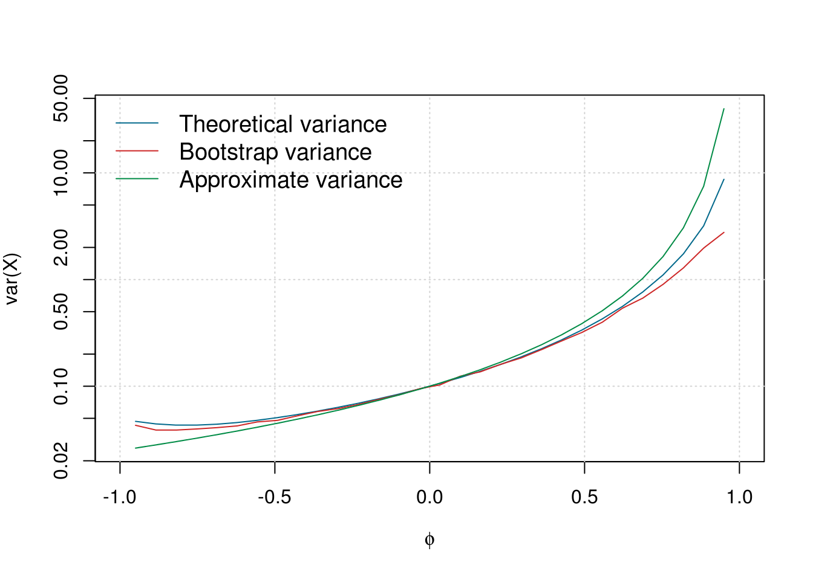
It can be observed that the variance of \(\bar{X}\) typically increases with the \(\phi\). As expected when \(\phi = 0\) we have \(\var(\bar{X}) = 1/n\) as in this case the process is a white noise. Moreover, the bootstrap approach appears to approximate well the curve of (@ref(eq:chap2_exAR1)) while the asymptotic formula provides a reasonable approximate for \(\phi\) being between -0.5 and 0.5. Naturally, the quality of this approximation would be far better for larger sample size (here we consider \(n = 10\), which is a little “extreme”).
2.3.2 Sample Autocovariance and Autocorrelation Functions
A natural estimator of the autocovariance function is given by:
\[\hat \gamma \left( h \right) = \frac{1}{T}\sum\limits_{t = 1}^{T - h} {\left( {{X_t} - \bar X} \right)\left( {{X_{t + h}} - \bar X} \right)} \]
leading the following “plug-in” estimator of the autocorrelation function
\[\hat \rho \left( h \right) = \frac{{\hat \gamma \left( h \right)}}{{\hat \gamma \left( 0 \right)}}.\]
A graphical representation of the autocorrelation function is often the first step for any time series analysis (again assuming the process to be stationary). Consider the following simulated example:
# Load package
library("gmwm")
# Set seed for reproducibility
set.seed(2241)
# Simulate 100 observation from a Gaussian white noise
Xt = gen.gts(WN(sigma2 = 1), N = 100)
# Compute autocorrelation
acf_Xt = ACF(Xt)
# Plot autocorrelation
plot(acf_Xt, show.ci = FALSE)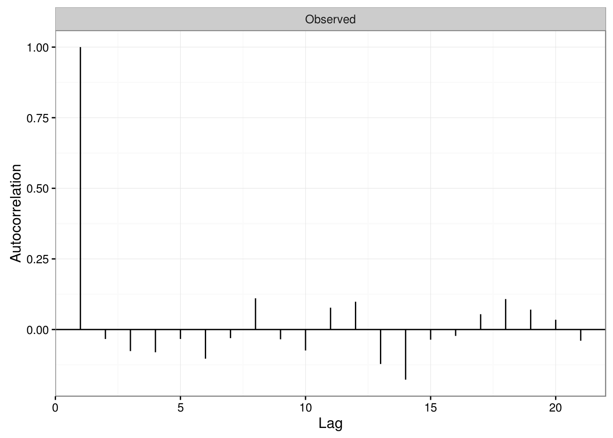
In this example, the true autocorrelation is equal to zero at any lag \(h \neq 0\) but obviously the estimated autocorrelations are random variables and are not equal to their true values. It would therefore be useful to have some knowledge about the variability of the sample autocorrelations (under some conditions) to assess whether the data comes from a completely random series or presents some significant correlation at some lags. The following result provides an asymptotic solution to this problem:
The proof of this Theorem is given in Appendix A.
Using this result, we now have an approximate method to assess whether peaks in the sample autocorrelation are significant by determining whether the observed peak lies outside the interval \(\pm 2/\sqrt{T}\) (i.e. an approximate 95% confidence interval). Returning to our previous example and adding confidence bands in the previous graph, we obtain:
# Plot autocorrelation with confidence bands
plot(acf_Xt)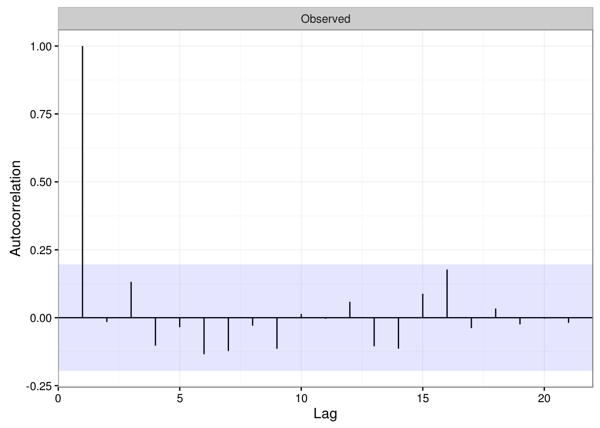
It can now be observed that most peaks lie within the interval \(\pm 2/\sqrt{T}\) suggesting that the true data generating process is uncorrelated.
# Load package
library(quantmod)
# Download S&P index
getSymbols("^GSPC", from="1990-01-01", to = Sys.Date())## [1] "GSPC"# Compute returns
GSPC.ret = ClCl(GSPC)
# Plot index level and returns
par(mfrow = c(1,2))
plot(GSPC, main = " ", ylab = "Index level")## Warning in plot.xts(GSPC, main = " ", ylab = "Index level"): only
## the univariate series will be plottedplot(GSPC.ret, main = " ", ylab = "Daily returns")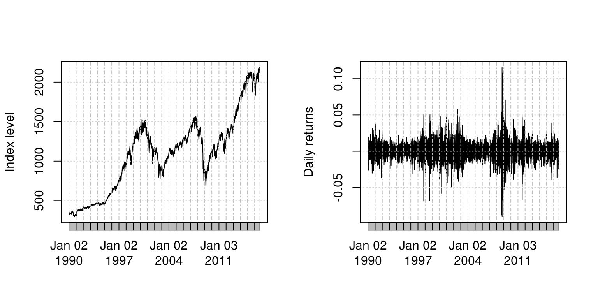
From these graphs it is clear that the returns are not identically distributed as the variance seems to vary with time and clusters with either high or low volatility can be observed. These characteristic of financial time series is well known and in the Chapter 5, we will discuss how the variance of such process can be approximated. Nevertheless, we compute the empirical autocorrelation function of the S&P 500 return to evaluate the degree of “linear” dependence between observation. The graph below presents the empirical autocorrelation.
sp500 = na.omit(GSPC.ret)
names(sp500) = paste("S&P 500 (1990-01-01 - ",Sys.Date(),")", sep = "")
plot(ACF(sp500))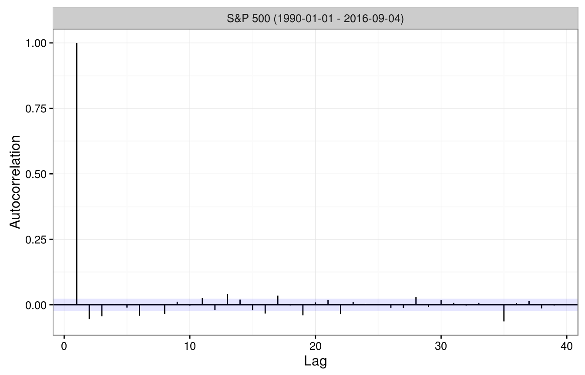
As expected, the autocorrelation is small but it might be reasonable to believe that this sequence is not purely uncorrelated.
Unfortunately, Theorem 1 is based on asymptotic argument and therefore the confidence bands constructed are also asymptotic and there are no “exact” tools that can be used in this case. To study the validity of this results when \(n\) is “small” we performed a simulation. In the latter, we simulated processes following from a Gaussian white noise and examine the empirical distribution of \(\hat{\rho}(3)\) with different sample sizes (i.e. \(n\) is set to 5, 10, 30 and 300). Intuitively, the “quality” of of the approximation provided by Theorem should increase with the sample size \(n\). The code below perform such simulation and compares the empirical distribution of \(\sqrt{n} \hat{\rho}(3)\) with a normal distribution with mean 0 and variance 1, i.e. its asymptotic distribution, which is depicted using a red line.
# Number of Monte Carlo replications
B = 10000
# Define considered lag
h = 3
# Sample size considered
N = c(5,10,30,300)
# Initialisation
result = matrix(NA,B,length(N))
# Set seed
set.seed(1)
# Start Monte Carlo
for (i in seq_len(B)){
for (j in seq_along(N)){
# Simluate process
Xt = rnorm(N[j])
# Save autocorrelation at lag h
result[i,j] = acf(Xt, plot = FALSE)$acf[h+1]
}
}
# Plot results
par(mfrow = c(2,length(N)/2))
for (i in seq_along(N)){
# Estimated empirical distribution
hist(sqrt(N[i])*result[,i], col = "royalblue1",
main = paste("Sample size n =",N[i]), probability = TRUE,
xlim = c(-4,4), xlab = " ")
# Asymptotic distribution
xx = seq(from = -10, to = 10, length.out = 10^3)
yy = dnorm(xx,0,1)
lines(xx,yy, col = "red", lwd = 2)
}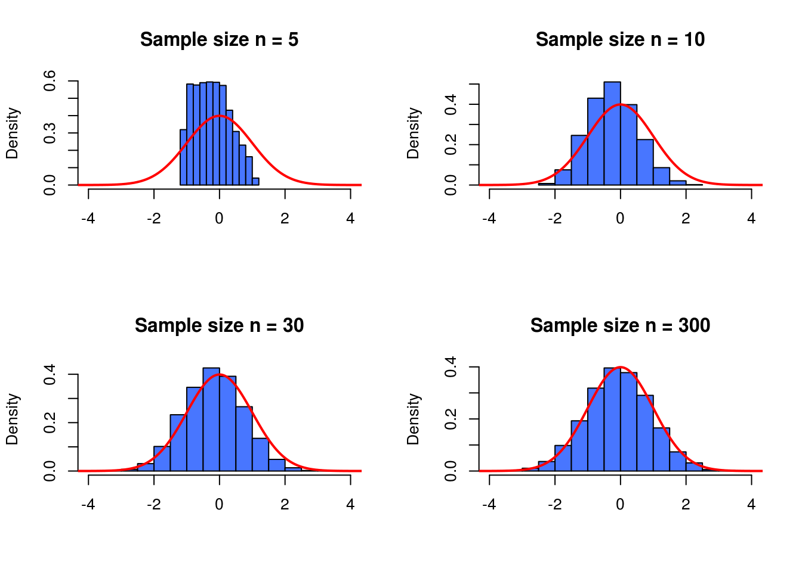
As expected, it can clearly be observed that the asymptotic approximation is quite poor when \(n = 5\) but as the sample size increases the approximation improves and is very close when, for example, \(n = 300\). This simulation could suggest that Theorem 1 provides a relatively “close” approximation of the distribution of \(\hat{\rho}(h)\).
2.3.3 Robustness Issues
The data generating process delivers a theoretical autocorrelation (autocovariance) function that, as explained in the previous section, can then be estimated through the sample autocorrelation (autocovariance) functions. However, in practice, the sample is often issued from a data generating process that is “close” to the true one, meaning that the sample suffers from some form of small contamination. This contamination is typically represented by a small amount of extreme observations that are called “outliers” that come from a process that is different from the true data generating process.
The fact that the sample can suffer from outliers implies that the standard estimation of the autocorrelation (autocovariance) functions through the sample functions could be highly biased. The standard estimators presented in the previous section are therefore not “robust” and can behave badly when the sample suffers from contamination. To illustrate this limitation of classical estimator we consider the following two processes:
\[ \begin{aligned} X_t &= \phi X_{t-1} + W_t, \;\;\; W_t \sim \mathcal{N}(0,\sigma_w^2),\\ Y_t &= \begin{cases} X_t & \quad \text{with probability } 1 - \epsilon\\ U_t & \quad \text{with probability } \epsilon\\ \end{cases}, \;\;\; U_t \sim \mathcal{N}(0,\sigma_u^2), \end{aligned} \]
when \(\epsilon\) is “small” and \(\sigma_u^2 \gg \sigma_w^2\), the process \((Y_t)\) can be interpreted as a “contaminated” version of \((X_t)\). The figure below represents one relalization of the processes \((X_t)\) and \((Y_t)\) using the following setting: \(n = 100\), \(\sigma_u^2 = 10\), \(\phi = 0,5\), \(\sigma_w^2 = 1\) as well as \(\alpha = 0.05\).
library(gmwm)
library(gridExtra)
# Simulate Xt
set.seed(1)
model = AR1(phi = 0.5, sigma2 = 1)
Xt = gen.gts(model)
# Construct Yt
epsilon = 0.01
nb_outlier = rbinom(1,length(Xt),epsilon)
Yt = Xt
Yt[sample(1:length(Xt),nb_outlier)] = rnorm(nb_outlier,0,10)
# Add names
Xt = gts(Xt)
Yt = gts(Yt, name = paste("(",expression(Y[t]),")",sep = ""))
# Plot data
a = autoplot(Xt) + ylim(range(Yt)) + ylab("(Xt)")
b = autoplot(Yt) + ylab("(Yt)")
grid.arrange(a, b, nrow = 2)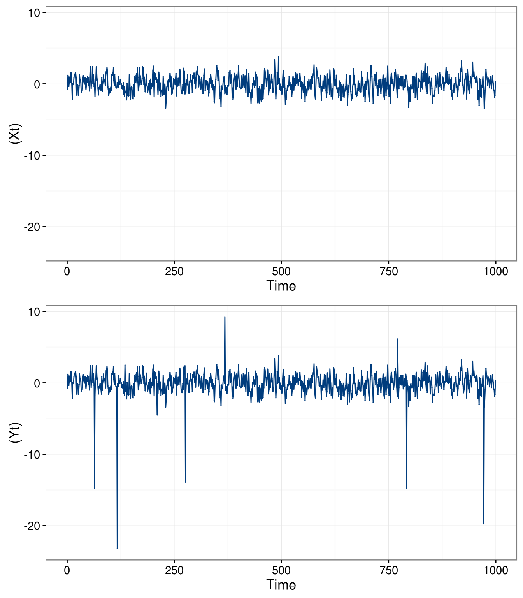
Next, we consider a simulated example to highlight how the performance of the “classical” autocorrelation can deteriorate if the sample is contaminated (i.e. what is the impact of using \((Y_t)\) instead of \((X_t)\), the “uncontaminated” process). In this simulation, we used the setting presented above and consider \(B = 10^3\) bootstrap replications.
# Define sample size
n = 100
# Define proportion of "extreme" observation
alpha = 0.05
# Extreme observation are generated from N(0,sigma2.cont)
sigma2.cont = 10
# Number of Monte-Carlo replications
B = 1000
# Define model AR(1)
phi = 0.5
sigma2 = 1
model = AR1(phi = phi, sigma2 = sigma2)
# Initialization of result array
result = array(NA, c(B,2,20))
# Set seed for reproducibility
set.seed(3298)
# Start Monte-Carlo
for (i in seq_len(B)){
# Simulate AR(1)
Xt = gen.gts(model, N = n)
# Create a copy of Xt
Yt = Xt
# Add a proportion alpha of extreme observations to Yt
Yt[sample(1:n,round(alpha*n))] = rnorm(round(alpha*n), 0, sigma2.cont)
# Compute ACF of Xt and Yt
acf_Xt = ACF(Xt)
acf_Yt = ACF(Yt)
# Store ACFs
result[i,1,] = acf_Xt[1:20]
result[i,2,] = acf_Yt[1:20]
}
# Compare empirical distribution of ACF based on Xt and Yt
# Vector of lags considered (h <= 20)
lags = c(1,2,5,10) + 1
# Make graph
par(mfrow = c(2,2))
for (i in seq_along(lags)){
boxplot(result[,1,lags[i]], result[,2,lags[i]], col = "lightgrey",
names = c("Uncont.","Cont."), main = paste("lag: h = ", lags[i]-1),
ylab = "Sample autocorrelation")
abline(h = phi^(lags[i]-1), col = 2, lwd = 2)
}
The boxplots in each figure show how the standard autocorrelation estimator is centered around the true value (red line) when the sample is not contaminated (left boxplot) while it is considerably biased when the sample is contaminated (right boxplot), especially at the smallest lags. Indeed, it can be seen how the boxplots under contamination are often close to zero indicating that it does not detect much dependence in the data although it should. This is a known result in robustness, more specifically that outliers in the data can break the dependence structure and make it more difficult for the latter to be detected.
In order to limit this problematic, different robust estimators exist for time series problems allowing to reduce the impact of contamination on the estimation procedure. Among these estimators there are a few that estimate the autocorrelation (autocovariance) functions in a robust manner. One of these estimators is provided in the robacf() function in the “robcor” package and the following simulated example shows how it limits the bias due to contamination. Unlike in the previous simulation, we only consider in this example data issued from the contaminated model, i.e. \((Y_t)\), and compare the performance of two estimators (i.e. classical and robust autocorrelation estimators):
# Load packages
library("robcor")
# Define sample size
n = 100
# Define proportion of "extreme" observation
alpha = 0.05
# Extreme observation are generated from N(0,sigma2.cont)
sigma2.cont = 10
# Number of Monte-Carlo replications
B = 1000
# Define model AR(1)
phi = 0.5
sigma2 = 1
model = AR1(phi = phi, sigma2 = sigma2)
# Initialization of result array
result = array(NA, c(B,2,20))
# Set seed for reproducibility
set.seed(5585)
# Start Monte-Carlo
for (i in seq_len(B)){
# Simulate AR(1)
Xt = gen.gts(model, N = n)
# Add a proportion alpha of extreme observations to Yt
Xt[sample(1:n,round(alpha*n))] = rnorm(round(alpha*n), 0, sigma2.cont)
# Compute standard and robust ACF of Xt and Yt
acf = ACF(Xt)
rob_acf = robacf(Xt, plot=FALSE)$acf
# Store ACFs
result[i,1,] = acf[1:20]
result[i,2,] = rob_acf[1:20]
}
# Compare empirical distribution of standard and robust ACF based on Xt
# Vector of lags considered (h <= 20)
lags = c(1,2,5,10) + 1
# Make graph
par(mfrow = c(2,2))
for (i in seq_along(lags)){
boxplot(result[,1,lags[i]], result[,2,lags[i]], col = "lightgrey",
names = c("Standard","Robust"), main = paste("lag: h = ", lags[i]-1),
ylab = "Sample autocorrelation")
abline(h = phi^(lags[i]-1), col = 2, lwd = 2)
}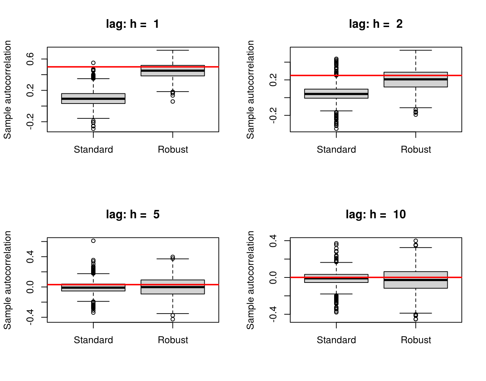
The robust estimator remains close to the true value represented by the red line in the boxplots as opposed to the standard estimator. It can also be observed that to reduce the bias induced by contamination in the sample, robust estimators pay a certain price in terms of efficiency as highlighted by the boxplots that show more variability compared to those of the standard estimator. To assess how much is “lost” by the robust estimator compared to the classical one in terms of efficiency, we consider one last simulation where we examine the performance of two estimators on data issued from the uncontaminated model, i.e. \((X_t)\). Therefore, the only difference between this simulation and the previous one is the value of \(\alpha\) set to \(0\), the code shall thus be omitted and the results are depicted below:
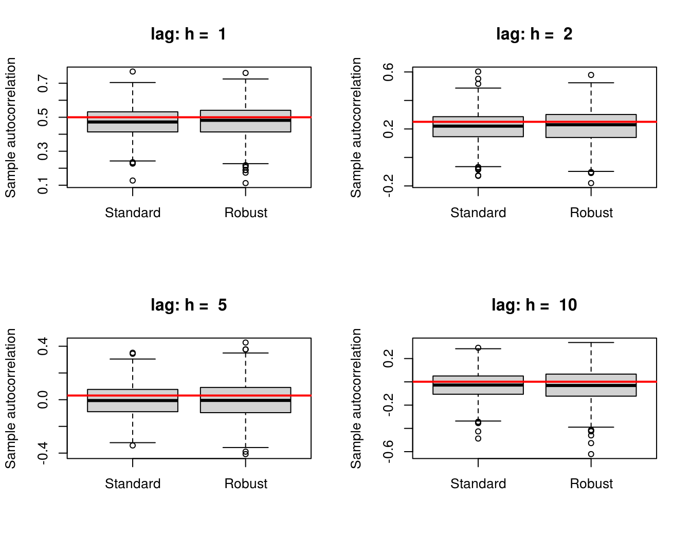
It can be observed that both estimators provide extremely similar results although the robust estimator is slightly more variable.
Next, we consider the issue of robustness on the real data set coming from the domain of hydrology presented in Section 1.2. This data concerns monthly precipitation (in mm) over a certain period of time (1907 to 1972). Let us compare the standard and robust estimators of the autocorrelation functions:
# Load packages
library(gmwm)
library(gridExtra)
library(robcor)
# Load data
data("hydro", package = "smacdata")
# Construct gts objects
hydro1 = gts(hydro, name = 'Non-robust Estimator')
hydro2 = gts(hydro, name = 'Robust Estimator')
# Plot data
a = plot(ACF(hydro1))
inter = ACF(hydro2)
inter[,,] = robacf(hydro2, plot=FALSE)$acf
b = plot(inter)
grid.arrange(a, b, nrow = 1)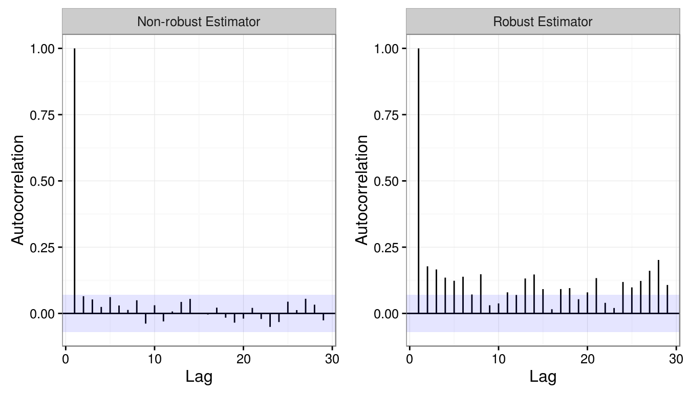
It can be seen that, under certain assumptions (e.g. linear dependence), the standard estimator does not detect any significant autocorrelation between lags since the estimations all lie within the asymptotic confidence intervals. However, many of the robust estimations lie outside these confidence intervals at different lags indicating that there could be dependence within the data. If one were only to rely on the standard estimator in this case, there may be erroneous conclusions drawn on this data. Robustness issues therefore need to be considered for any time series analysis, not only when estimating the autocorrelation (autocovariance) functions.
Finally, we return to S&P 500 returns and compare the classical and robust autocorrelation estimators, which are presented in the figure below.
# Construct gts objects
sp500c = gts(sp500, name = 'Non-robust Estimator')
sp500r = gts(sp500, name = 'Robust Estimator')
# Plot data
a = plot(ACF(sp500c))
inter = ACF(sp500r)
inter[,,] = robacf(sp500r, plot=FALSE)$acf
b = plot(inter)
grid.arrange(a, b, nrow = 1)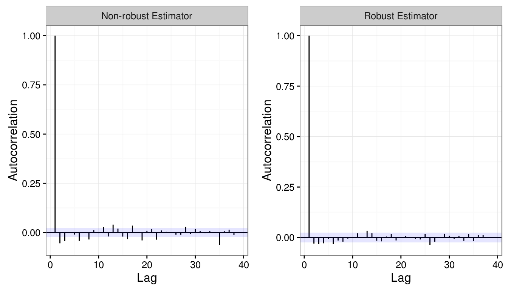
It can be observed that both estimators are very similar. Nevertheless, some small discrepancies can be observed, in particular, the robust estimators seems to indicate an absence of linear dependence while a slightly different interpretation might be achieved with the classical estimator.